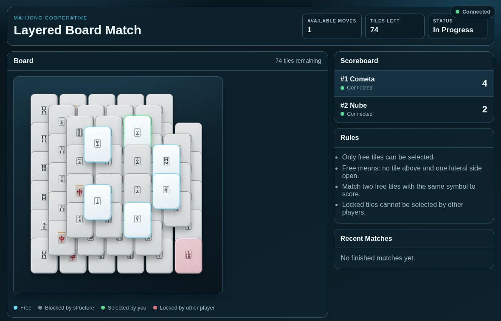

Cooperative Mahjong
Multijugador en tiempo real
Dos jugadores comparten el tablero. Cuando alguien selecciona una ficha, la otra sesión la ve bloqueada.
Mi aporte. Contribuí a la lógica multijugador en el servidor, los eventos de Socket.IO, los límites de jugadores y los estilos del cliente.
- TypeScript
- Express
- Socket.IO
- React


- Sesión ASelecciona
- Socket.IOPropaga
- Sesión BVe el bloqueo